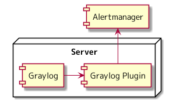
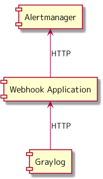

さくらインターネット Advent Calendar 2021 18日目の記事になります。
Graylog を使ったログ管理基盤 では、「さくらの専用サーバ PHY」にて過去に利用していたログ管理の仕組みについて説明しました。
ログには、何かあったときに調査するための側面と、 このログが出力されたら対応が必要な監視の側面があると思います。
今回は、実際には Grafana Loki にて実現したため使うことはありませんでしたが、 「さくらの専用サーバ PHY」にて、 Graylog を使ったログ監視について考えていたとを書いていきます。
監視について考えていたこと
「さくらの専用サーバ PHY」の監視について、だたアラートがどこかに通知できればよいと考えていたわけではないことを書いていきます。
アラート通知のインタフェースには Alertmanager を使う
今までに係わってきたシステムでは、アラートを通知してくるものが、 Nagios だったり、 Cacti だったり、単体のアプリケーションだったりと、 それぞれが独自に通知する仕組みを持っていると、それぞれの仕組みを見なければならず、運用の負荷た高いなと感じていました。
「さくらの専用サーバ PHY」では、 VictoriaMetrics を使ったメトリクス管理基盤 のように、 メトリクス監視の通知に Alertmanager を使っています。
ログ監視に対して、独自に通知する仕組みを作り込むのではなく、アラート通知のインタフェースを Alertmanager に統一することで、 アラートについては、 Alertmanager を見ればよい、 アラート通知を停止したり、抑止したりといったオペレーションを統一していきたいと考えていました。
メトリクス監視の Alertmanager のルーティング設定を使いたい
メトリクス監視では、 ALERTING RULES のように PromQL の式に加えて label, annotation を設定します。 メトリクス監視にて設定された label などを設定し、 Alertmanager では、受け取ったアラートに付与されている label から、アラートをどこに通知するかのルーティングを設定します。
ログ監視のインタフェースを Alertmanager に統一できたとして、 ルーティングの設定がメトリクス監視と異なるといった状況になると、 Alertmanager のルーティング設定が肥大化し、それはそれで運用の負荷に跳ね返ってくるのではないかと思っていました。
可能であれば、メトリクス監視にて、 Alertmanager に設定したルーティングをログ監視でも使えるようにし、 Alertmanager のルーティング設定を小さく保ちたいと考えていました。
Alertmanager のインタフェースに変換する仕組みが必要そう
利用していた Graylog は 3.1 になります。 アラートルールを設定し、通知する機能は持っていましたが、 標準では、 Alertmanager に通知する仕組みを持っていませんでした。 何かしら、 Alertmanager のインタフェースに変換する仕組みを用意しなければならないということを考えていました。
Alertmanager との連携
Graylog が Alertmanager と連携するために、どのようなやり方がありそうかについて説明します。 ログ管理も監視も Grafana Loki に切り替えたため、 Graylog でのログ監視については、調査したところまでで、それぞれについて検証などは行っていません。
Plugin 方式

Graylog の公開している API を使うことで、 プラグインという形で Graylog を拡張できるようになっているということがわかりました。
https://archivedocs.graylog.org/en/3.1/pages/plugins.html
GraylogからAlertmanagerに通知するプラグイン がサードパーティーで公開されているところまでは確認しました。 プラグインの開発には、 Java を使うことになり、 Java で Hello World も書いたことが無い私には、 プラグインを作ることも、メンテナンスすることもハードルが高そうだなという気持ちになりました。
Webhook 方式

Graylog は、アラートを HTTP で通知する機能を持っていました。
https://archivedocs.graylog.org/en/3.1/pages/streams/alerts.html#http-alert-notification
Webhook であれば、自分が馴染のある言語にて HTTP POST を受け、 Alertmanager に HTTP POST するアプリケーションを実装すればよいため、 Graylog と Alertmanager と連携させる仕組みを実現できるのではないかと思いました。
何が必要そうか
Graylog でのログ監視を Alertmanager と連携させどう実現するかを調べてみたことにより、 何かしらの開発は必要そうであるということは見えてきました。